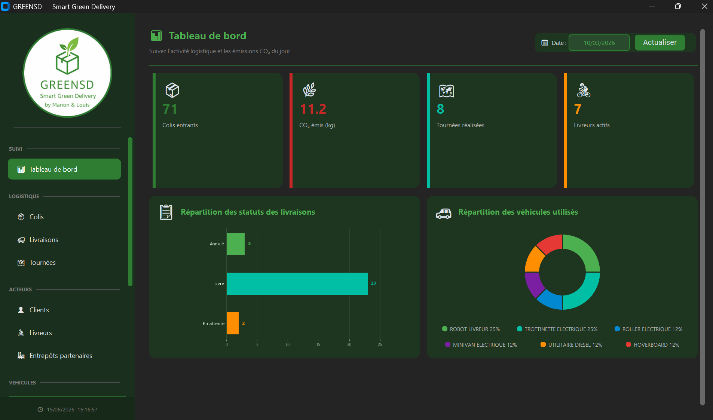
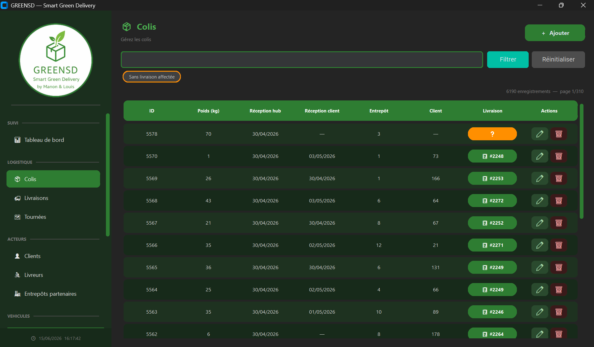
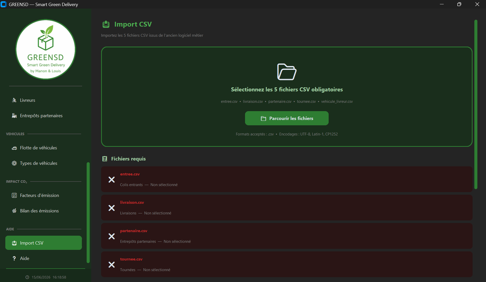

🗄️ SAÉ — Conception et implémentation d'une base de données
Création d'une application de gestion et de visualisation des opérations logistiques d'une entreprise de transport. Conception de la base de données (méthode Merise) et d'une interface graphique avec onglets CRUD et KPI pour interagir avec la base de données.
Dans le vaste cycle de la donnée, il y a de nombreuses étapes, comme l'extraction, le nettoyage, le stockage ou la valorisation. Pour nous entraîner à ce cycle, notre projet consistait à créer un progiciel pour une société (fictive). Pour le contexte, il s'agissait d'une entreprise de livraison bas carbone en zone urbaine (donc des opérations logistiques telles que des tournées et livraisons, arrivées de colis, etc.). Nous étions par binôme. Cet outil devait avoir plusieurs fonctionnalités :
- Posséder une base de données pour le stockage des informations (MySQL — technologie imposée)
- Être capable d'importer les informations de l'ancienne base de données au format Excel (données de très mauvaise qualité — normalisation et correction obligatoires)
- Pouvoir interagir directement avec la base de données via l'interface de l'application (onglet CRUD)
- Disposer d'un tableau de bord pour visualiser des indicateurs statistiques afin de mieux comprendre la situation de l'entreprise (KPI et graphiques)
La première étape a été de créer la structure de la base de données, car c'est la pièce maîtresse de notre application. Pour ce faire, nous avons utilisé la méthode Merise. L'objectif que nous nous sommes fixé avec ma binôme était de créer une architecture correspondant au mieux au monde professionnel, tout en étant capable d'intégrer les données externes, qui étaient vraiment de très mauvaise qualité.
Il nous a ensuite fallu nous répartir les tâches : je me suis principalement occupé de l'importation des données externes. Il faut savoir que l'importation des données était réellement complexe. En effet, ces données étaient réparties dans 5 fichiers CSV, où certaines données de jointure entre ces fichiers (comme le nom d'un livreur) n'étaient pas identiques ! Il m'a fallu redoubler d'imagination pour permettre l'insertion. J'ai notamment créé un dialogue de validation des incohérences avant insertion, une distribution des données en « rond-point », une vérification systématique des doublons, etc.
Il a également fallu s'occuper de la fusion de nos 2 travaux et de l'assistance mutuelle en cas de besoin. Nous avons, à nous deux, cumulé à peu près 300 heures de travail sur cette SAÉ (150 h chacun), principalement prises sur nos week-ends et nos soirées. Nous avions 6 semaines pour réaliser ce projet. Ce projet nous a profondément passionnés.
- Interface graphique ergonomique et intuitive.
- Interaction avec la base de données (CRUD).
- Importation de données externes.
- Tableau de bord dynamique pour la visualisation des informations.
Le code est séparé en 3 fichiers Python : greensd.py (pour les traitements backend), greensd_ihm.py (pour l'interface) et requetes_sql.py (qui regroupe toutes les requêtes effectuées dans les 2 autres fichiers).
Le MLD de la base de données est disponible en téléchargement en bas de cette page, ainsi que l'intégralité du projet avec sa documentation.
Les principales bibliothèques utilisées sont Pandas, CustomTkinter et MySQL.
Il y a eu 2 difficultés majeures :
- Comprendre le contexte métier, les besoins/attentes et les contraintes.
- Gérer la charge de travail sur le temps personnel sans compromettre les autres tâches et projets à réaliser en simultané.



- Habileté à manier Python pour différents types de fonctionnalités (backend, interface, dataframe, graphique, ...).
- Compréhension et adaptation au contexte métier et aux contraintes.
- Création d'architectures pertinentes de bases de données.
- Programmation modulaire et orientée objet.
- Création d'interfaces graphiques et gestion de l'UX.
- Gestion de la communication entre l'application et le serveur de base de données.
- Capacité à gérer des données de qualité variée.
- Travail d'équipe.
- Gestion de la charge de travail en autonomie.
- Capacité à restituer l'information sous diverses formes.
Comprendre qu'une analyse correcte ne peut émaner que de données propres et préparées.
Parmi les apprentissages critiques (éléments à maîtriser dans la formation, à dimension très académique), je pense que ce projet correspond le mieux à celui cité ci-dessus. L'une des étapes les plus complexes de notre application a été la gestion des imports, et donc la normalisation des données. Il est vite devenu évident que si les données n'étaient pas normalisées et cohérentes avec la base de données, alors aucune exploitation des données ni aucune fiabilité du logiciel ne seraient possibles. C'est pour remédier à cela qu'un dialogue avec l'utilisateur a notamment été mis en place au moment de l'import, afin de garantir la cohérence des données en base.